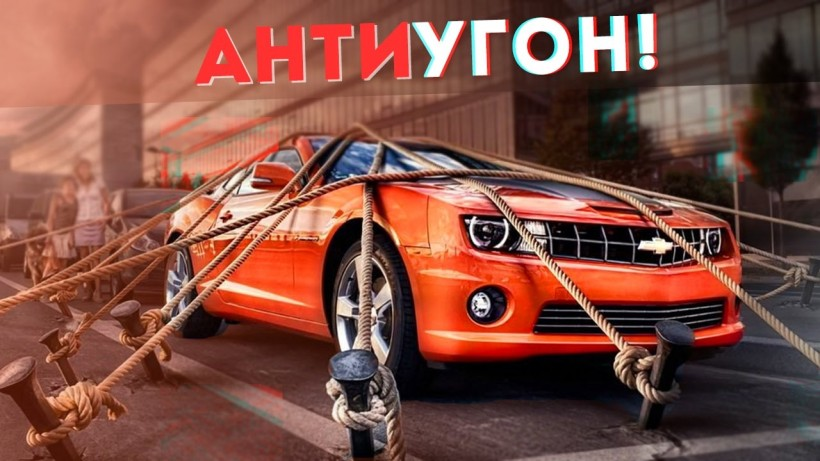

Во время мирового кризиса автомобиль опять становится роскошью. Но даже при таком раскладе купить его – это только полдела. Еще придется потратиться на страховку и даже средства от угона, некоторые из которых стоят до 100.000 рублей.
Даже если вы рассчитываете на компенсацию от страховой компании в случае угона вашей машины, то не забывайте - выплачивают её не сразу. Вам придется ждать, когда будет закрыто уголовное дело. А на это уйдет не один месяц. И всё это время придётся ездить на общественном транспорте.
К тому же размер компенсации будет уменьшен на величину амортизации автомобиля (примерно 20% стоимости машины за первый год пользования, и за каждый последующий год еще по минус 10%).
И, разумеется, никто не вернёт стоимость страховки. А ведь на наиболее угоняемые машины страховка может стоить две, три, пять и более тысяч долларов. Поэтому специалисты советуют один раз потратиться и поставить на машину противоугонный комплекс.
Противоугонный комплекс – это индивидуально подобранный набор устройств, которые дополняют друг друга и все вместе препятствуют угону вашей машины. В противоугонный комплекс могут входить та же сигнализация, плюс иммобилайзер, замки на капот, рулевой вал, коробку передач, блокираторы дверей, спутниковая поисковая система и ещё некоторые другие устройства.
К тому же противоугонный комплекс подбирается индивидуально, под конкретную машину. То, что нужно для новой Хонды Аккорд, будет излишеством для Нексии, но может оказаться недостаточным для нового Лексуса.
Какой противоугонный комплекс ставить и где?
Защиту своего автомобиля лучше доверить компании, которая специализируется на установке противоугонных комплексов – и никаких "просто мастерских" или "сосед там посоветовал".
Соберите информацию о компаниях, которые профессионально занимаются установкой таких комплексов. Пообщайтесь с консультантами этих фирм. Сравните предложения. Помните, что лидеры рынка по установке противоугонных систем постоянно анализируют приёмы угонщиков и изобретают новые методы противодействия угонам.
Но в любом случае сочетайте механические противоугонные средства с электронными и электромеханическими.
Эффективная противоугонная система должна включать в себя минимум 3 устройства:сигнализацию, иммобилайзер и электромеханический замок на капот. Если ваша машина входит в перечень наиболее угоняемых, этот набор должен быть существенно усилен.
Блокиратор руля Плюсы: быстро устанавливается, всегда на виду – это отпугивает угонщиков.Еще немного о противоугонных системах ...